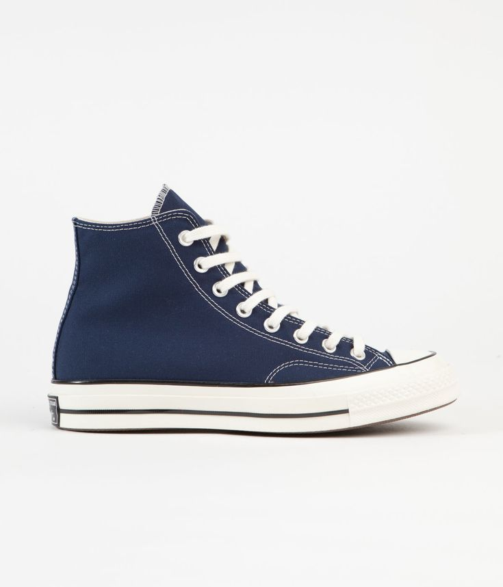

Rekomendasi Sepatu Bahan Canvas
Sepatu berbahan canvas menjadi favorit karena ringan, fleksibel, dan mudah dipadukan dengan berbagai gaya. Material canvas juga memiliki sirkulasi udara yang baik sehingga nyaman dipakai untuk aktivitas sehari-hari. Beberapa merek populer antara lain Converse, Vans, dan Compass.
Tips merawat sepatu canvas:
- Cuci menggunakan sabun khusus atau deterjen lembut.
- Jangan menggunakan air panas karena dapat merusak tekstur canvas.
- Keringkan dengan cara diangin-anginkan, hindari panas matahari langsung.